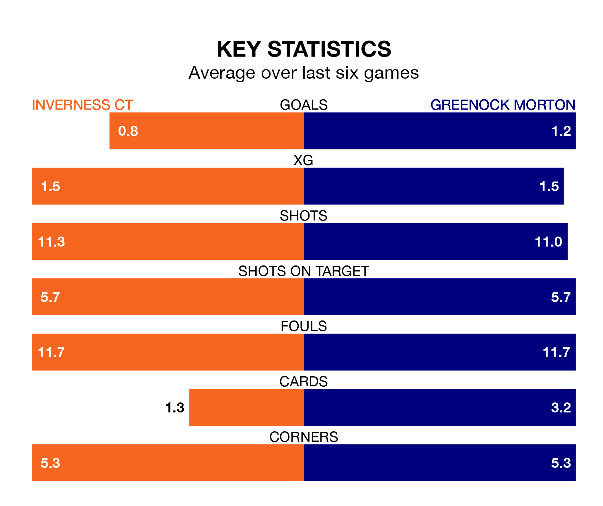

Inverness CT host Greenock Morton on Friday at the Tulloch Caledonian Stadium in the Championship.
In their last league match, on Saturday, Inverness CT drew with Dunfermline Athletic 1-1 away, with their goal scored by Aribim Pepple.
Greenock Morton also drew, 0-0 at home against Raith Rovers.
Inverness CT are ninth in the table after 35 games, of which they have won nine and drawn 12, earning 39 points.
Greenock Morton are four places ahead of ICT in fifth, with 12 wins and nine draws putting them on 45 points.
In the last 10 years, Inverness CT and Greenock Morton have played each other on 28 occasions. Inverness CT won 12 of them, Greenock Morton eight, and they drew eight times.
On average, ICT scored 1.6 goals and the Ton 1.1 in those matches.
Their last meeting was on March 2, when Inverness CT won 2-0 away.
In Ryan Mullen, the Ton can rely on one of the league's safest pair of hands. He has kept nine clean sheets in his 22 appearances this season, and only two other 'keepers – Dundee United's Jack Walton and Raith Rovers' Maciej Dabrowski – have been able to prevent the opposition scoring on more occasions in the Championship.
In the hosts' net, Mark Ridgers has seven clean sheets in 35 games. He has conceded a goal every 85 minutes, 30% more often than the 107 minutes between goals for Mullen.
With 38 goals in 35 games so far this season, Inverness CT are the league's second-lowest scorers with 1.1 goals per game. But they are conceding fewer than average too, letting in 39 goals at a rate of 1.1 per game.
The away side are also below average scorers, with 1.2 goals per game, compared to a league average of 1.4. They have also conceded 1.2 goals per game.
Inverness CT are in mixed form in the Championship, with two wins and two draws from their last six games.
And also with two wins and two draws over that period, Greenock Morton's form is identical – they have both taken eight points from 18.
Updated: 10:44 (UTC), 30/04/24